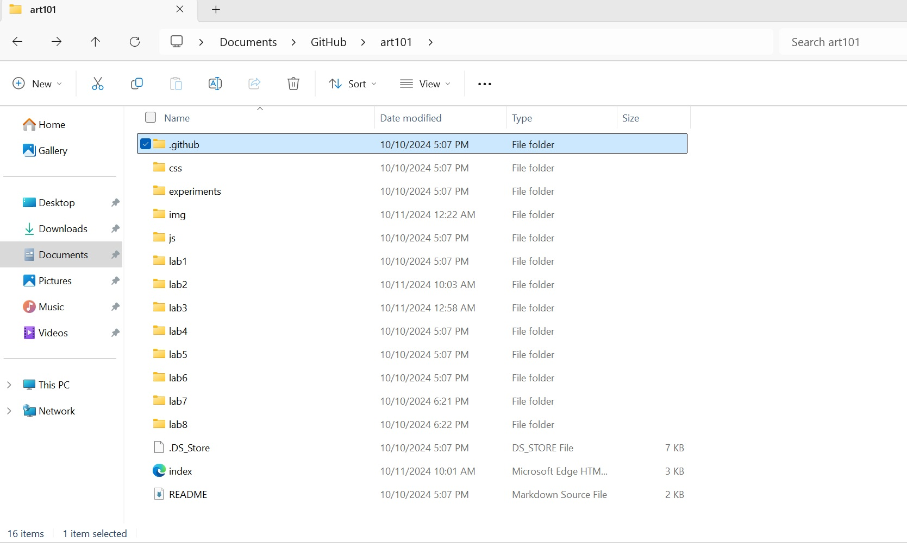

The point of the lab was to create a local file into my computer and create a new index.html file.
I'm glad to say I understood the lab well and didn't have much trouble creating the file structue and index.hmtl file. I would have the occasional issue with the links, but I was able to fix it.
Hopefully you can see the index.html file I created. Here is the file structure I made:
